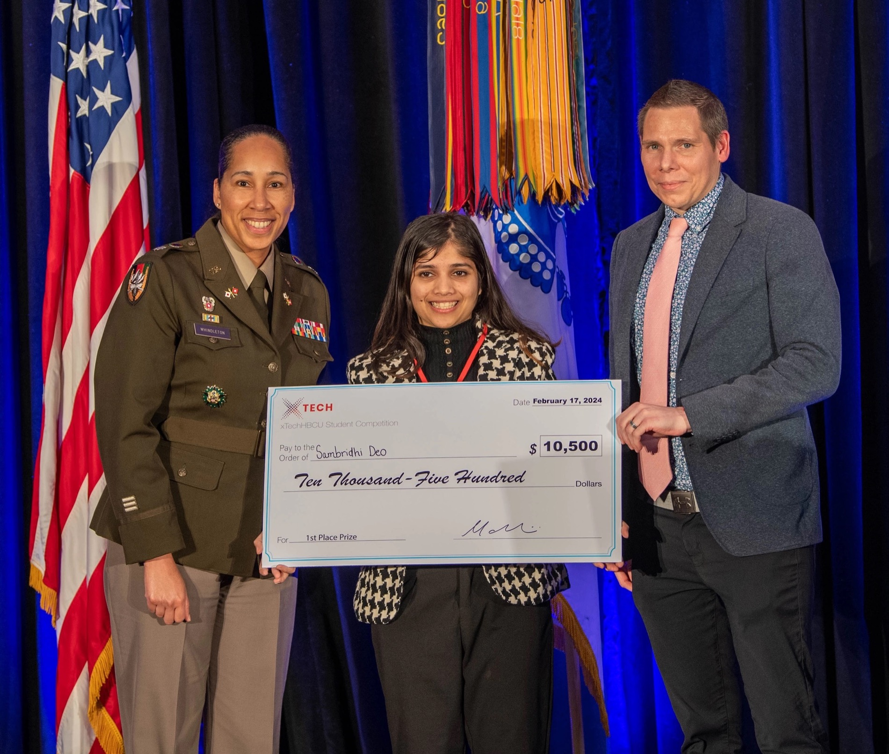
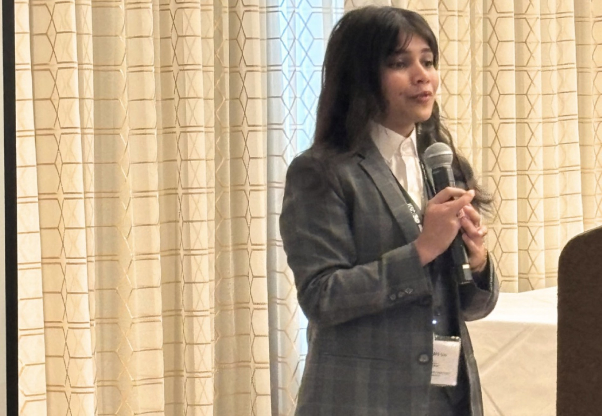
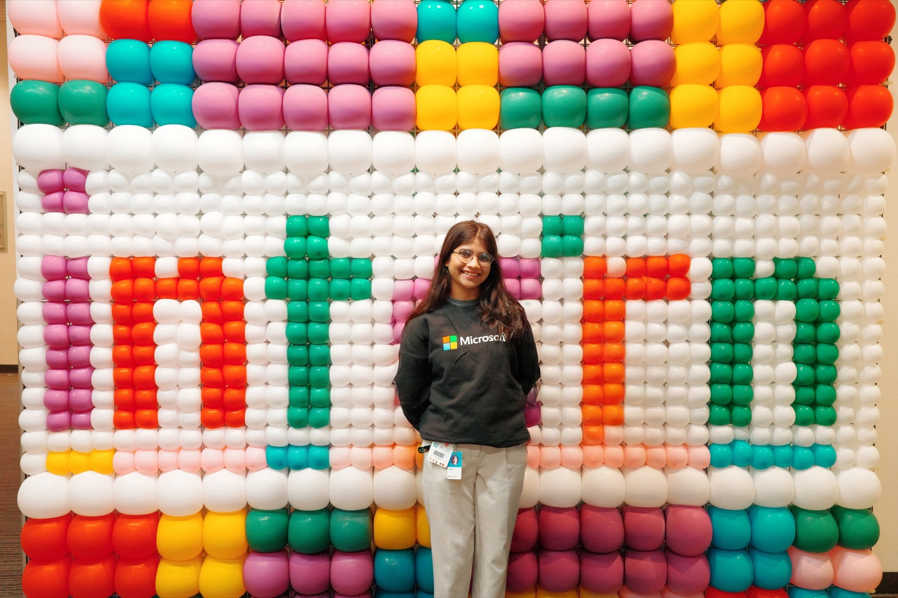
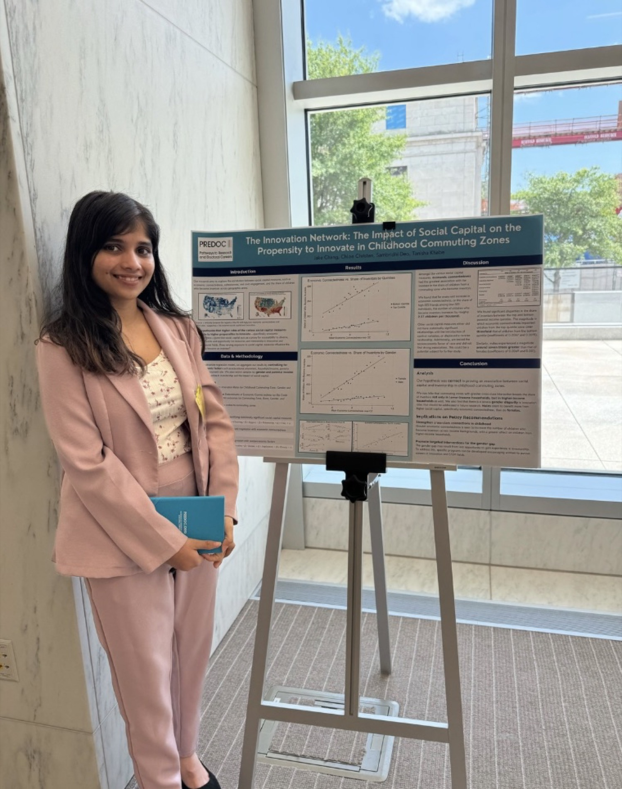
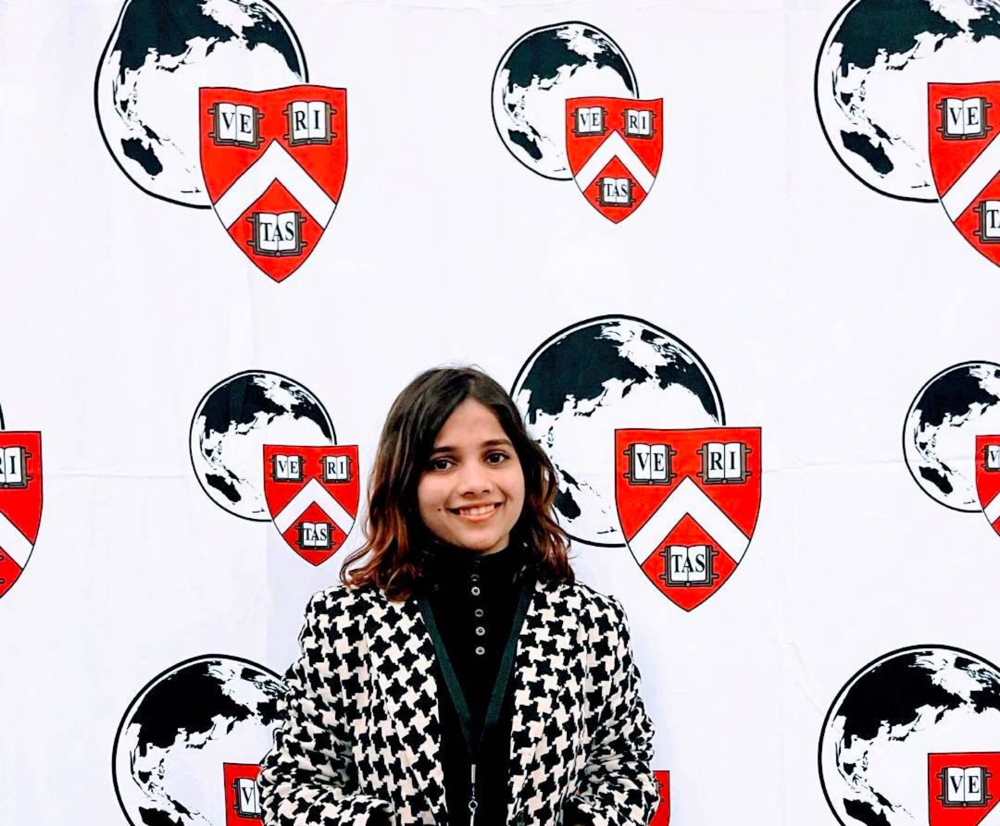
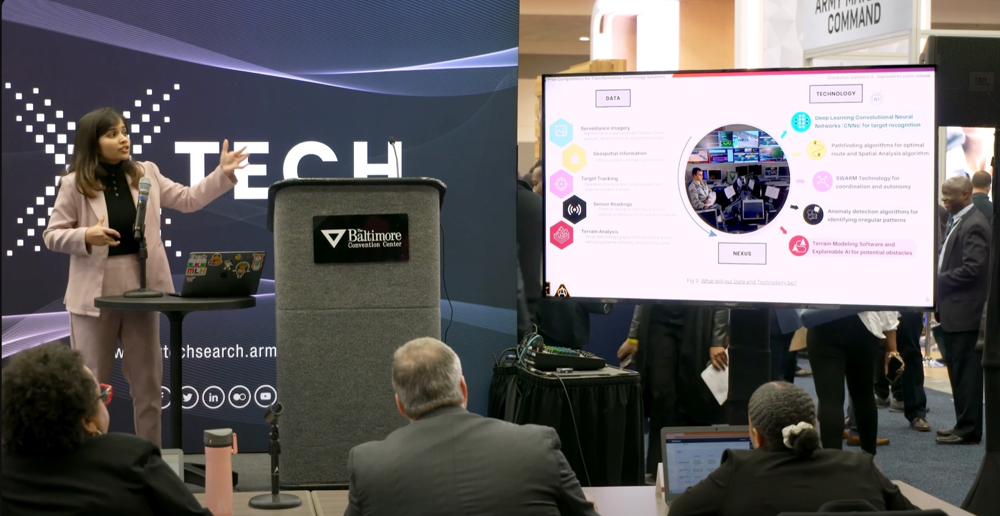

Software Engineer · Microsoft Security
Security, Data Governance, and Data Loss Protection.
SAMBRIDHI DEO · SAM DEO
I build secure, impactful technology—and make room for art, community, and the people it serves.
I’m a software engineer at Microsoft Security, working on governance, data protection, and more. I’m from Nepal and moved to the U.S. at 17.
My research background is in secure AI innovation—including detecting attacks on power grids and research on reproducible scientific workflows with IRIS-HEP at CERN.
On the side, I draw, dance, create content, and care about health-tech and differently abled individuals.
Explore my work ↗


BUILDING · ADVOCACY · IDEAS



Security, Data Governance, and Data Loss Protection.
Worked on AI agents and natural language processing. Internship post ↗
Joined the HBCU Talent Development cohort as a Project Manager and Data Analyst. LinkedIn announcement ↗
Researched federated deep learning for false data injection attack detection in cyber-physical power systems. Read the paper ↗
Cloud and backend development for the NSF-funded CollabNext team. CollabNext paper ↗
Built Heal-Di, a health-tech platform to make medical data accessible using distributed systems.
Built reproducible scientific workflows for dark matter research. Fellow profile ↗
Roles, projects, and milestones that shaped my path.